Live-Document / video_model / Stage 2 / Phase 7
让模型负责“像真的”，
让程序负责“讲得对”
本阶段不是继续把微弱噪声叫作材质增强，而是把三条路线各自跑完、 保留失败，并决定它们在通用系统中分别负责什么。结果：A 适合生成一次真实底图； B 适合在底图上精确改变教学状态；C 适合精确几何和物理场。
先看结论
| 路线 | 现在负责什么 | 结论 | 原因 |
|---|---|---|---|
| A 半自由扩散 | 单张标准场景 / 材质供体 | 部分接受 | 单帧真实，但不能独立生成四帧 |
| B 冻结真实底图 + 程序状态 | 化学、生物等材质型案例 | 接受 | 真实感与事实控制分工清楚 |
| C 对象 / 物理场渲染 | 数学几何、波场等精确案例 | 接受 | 对象身份和数值场不交给扩散模型猜 |
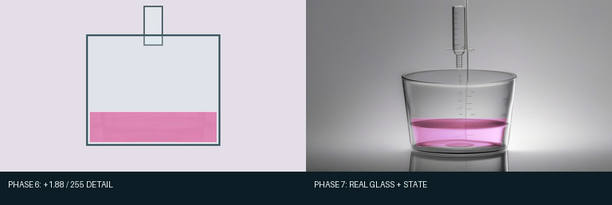
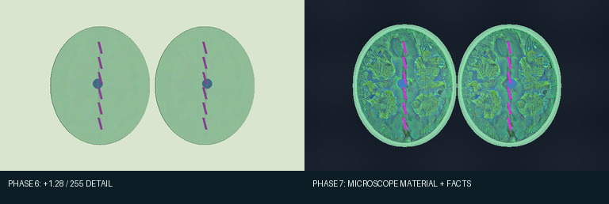
为什么 Phase 6 看不出“材质增强”
旧方法从一张模型图中只取高频残差：先做模糊，用“原图减模糊图”得到细小纹理， 把残差截断在 ±10，再乘 0.30–0.35，只贴进允许修改的区域。可以写成：
纹理残差 = clip(模型图 − 模糊(模型图), -10, +10) 旧输出 = 程序图 + 0.30~0.35 × median4(纹理残差)
它的优点是几乎不可能破坏事实；缺点也正是几乎什么都没改变。化学、生物和地理 的平均变化分别只有 1.90、1.30、0.87（0–255 标度）。Phase 6 的“通过”只表示 安全合成器没有越界，不表示真实感达标。本报告把这两个判断拆开。
统一流程：四类信息各司其职
定义对象、位置和状态
区域遮罩、对象身份或数值场
SDXL 标准场景或材质样本
把材质放回事实坐标
这里的 mask（遮罩）不是多余中间产物。它是一张只有区域含义的图： 白色表示允许改变，黑色表示不得改变。conditioning（控制条件）则是模型 实际看到的黑白结构图；它告诉 ControlNet 哪里应该有器材或山脊。两者都会在下面显示， 并说明怎样得到、用在哪里。
路线 A：SDXL + Canny ControlNet 半自由生成
输入不是像素程序图本身，而是程序语义层绘出的简洁结构控制图。SDXL 从噪声开始生成
光照、玻璃、岩石和空气感；Canny ControlNet 用黑白线约束大结构。模型为
stabilityai/stable-diffusion-xl-base-1.0 和
diffusers/controlnet-canny-sdxl-1.0，本地 FP16 权重哈希记录在每组
model_fingerprints.json 中。统一参数为 1024×576、30 步、
guidance 6.0；控制强度每组试两档。
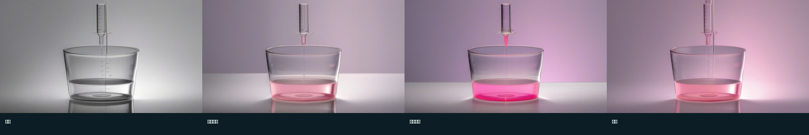
控制图到底怎样从程序数据画出来
化学控制图使用确定性的器材模板：黑底白线，只画一个烧杯、一个滴定管和液面，
不含粉色、文字或箭头。地理第一轮读取 geo02_terrain_region：
逐列取地形区域最上方像素并连成山脊；再从
geo02_humidity_cloud_rain 取阈值 0.22 的外包络，每隔 3 像素画云边，
并在 x=210–340 范围每隔 15 像素画雨线。失败后第二轮删除云雨，只保留地形最上沿。
最后用最近邻放大到 1024×576，避免灰边。精确实现见
phase7_semifree.py，
而不是靠报告外的手工修图。
CHEM-01 · 起始：控制图、完整提示词与六张候选

正向提示词
Straight-on photo of one glass beaker under one glass burette, locked centered camera, clear glass, colorless liquid, realistic refraction and reflections, neutral laboratory, initial acidic solution is colorless with no pink region, one beaker, one burette, fixed liquid level and layout, no text
负向提示词
extra beakers, extra burettes, extra tubes, missing vessel, moved liquid level, pouring stream, crystals, foam, large bubbles, text, labels, arrows, user interface, watermark, plastic toy, metallic container, cropped apparatus, tilted camera, perspective view, blur
两档控制强度 × 三个复现编号 = 六张候选。 “复现编号”只是随机噪声的固定起点；相同模型、参数和编号可重现同一张图， 它不是画面含义或质量分数。
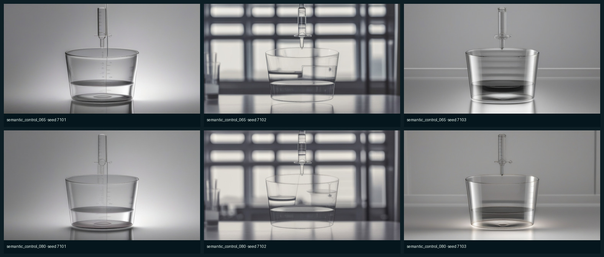
CHEM-01 · 机制出现：控制图、完整提示词与六张候选
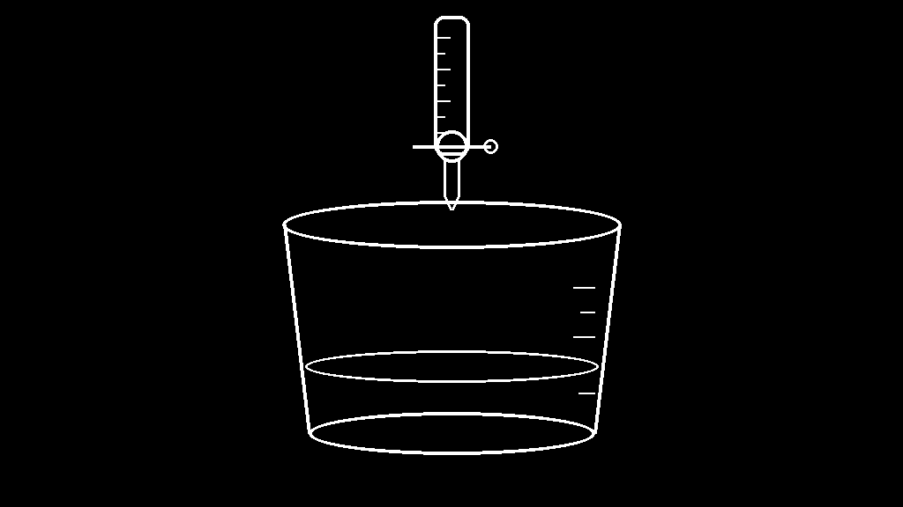
正向提示词
Straight-on photo of one glass beaker under one glass burette, locked centered camera, clear glass, colorless liquid, realistic refraction and reflections, neutral laboratory, one small pale pink plume below the tip, all other liquid colorless, one beaker, one burette, fixed liquid level and layout, no text
负向提示词
extra beakers, extra burettes, extra tubes, missing vessel, moved liquid level, pouring stream, crystals, foam, large bubbles, text, labels, arrows, user interface, watermark, plastic toy, metallic container, cropped apparatus, tilted camera, perspective view, blur
两档控制强度 × 三个复现编号 = 六张候选。 “复现编号”只是随机噪声的固定起点；相同模型、参数和编号可重现同一张图， 它不是画面含义或质量分数。
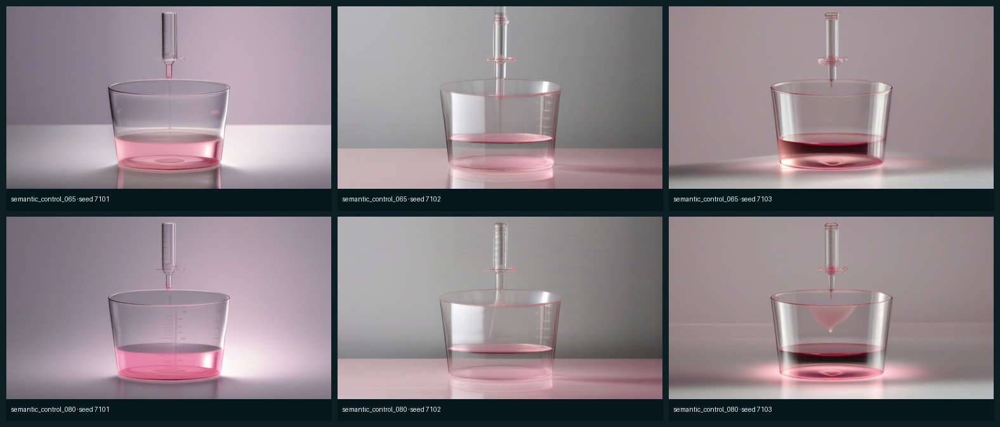
CHEM-01 · 阶段结果：控制图、完整提示词与六张候选

正向提示词
Straight-on photo of one glass beaker under one glass burette, locked centered camera, clear glass, almost colorless liquid, realistic refraction and reflections, neutral laboratory, the temporary pink plume has dispersed and nearly vanished, one beaker, one burette, fixed liquid level and layout, no text
负向提示词
extra beakers, extra burettes, extra tubes, missing vessel, moved liquid level, pouring stream, crystals, foam, large bubbles, text, labels, arrows, user interface, watermark, plastic toy, metallic container, cropped apparatus, tilted camera, perspective view, blur
两档控制强度 × 三个复现编号 = 六张候选。 “复现编号”只是随机噪声的固定起点；相同模型、参数和编号可重现同一张图， 它不是画面含义或质量分数。
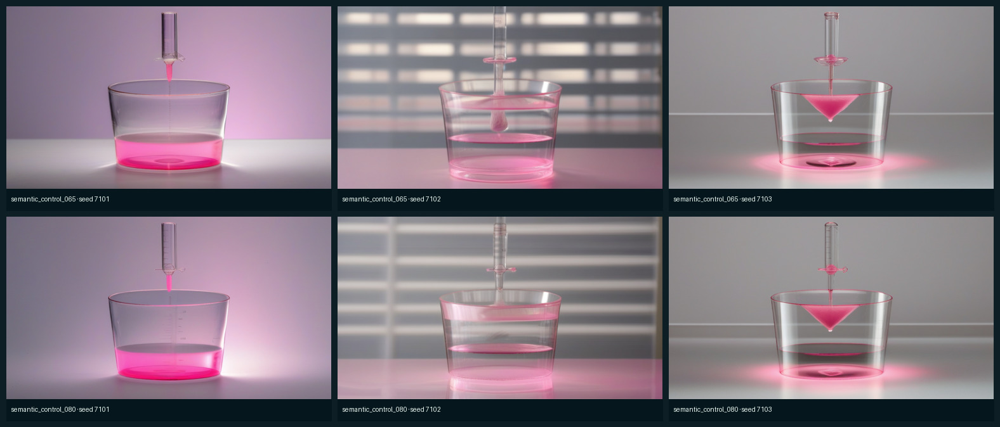
CHEM-01 · 结束：控制图、完整提示词与六张候选

正向提示词
Straight-on photo of one glass beaker under one glass burette, locked centered camera, clear glass, very pale pink liquid, realistic refraction and reflections, neutral laboratory, the whole solution has a uniform persistent endpoint tint, one beaker, one burette, fixed liquid level and layout, no text
负向提示词
extra beakers, extra burettes, extra tubes, missing vessel, moved liquid level, pouring stream, crystals, foam, large bubbles, text, labels, arrows, user interface, watermark, plastic toy, metallic container, cropped apparatus, tilted camera, perspective view, blur
两档控制强度 × 三个复现编号 = 六张候选。 “复现编号”只是随机噪声的固定起点；相同模型、参数和编号可重现同一张图， 它不是画面含义或质量分数。
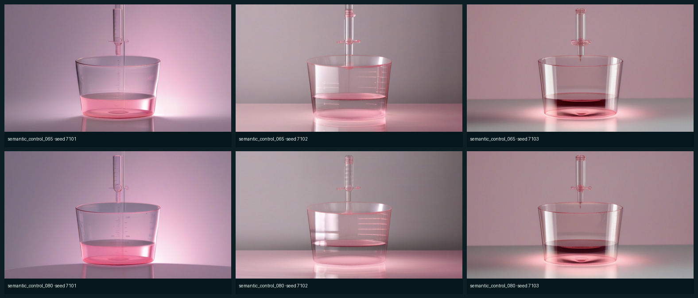
GEO-02 · 阶段结果：控制图、完整提示词与六张候选
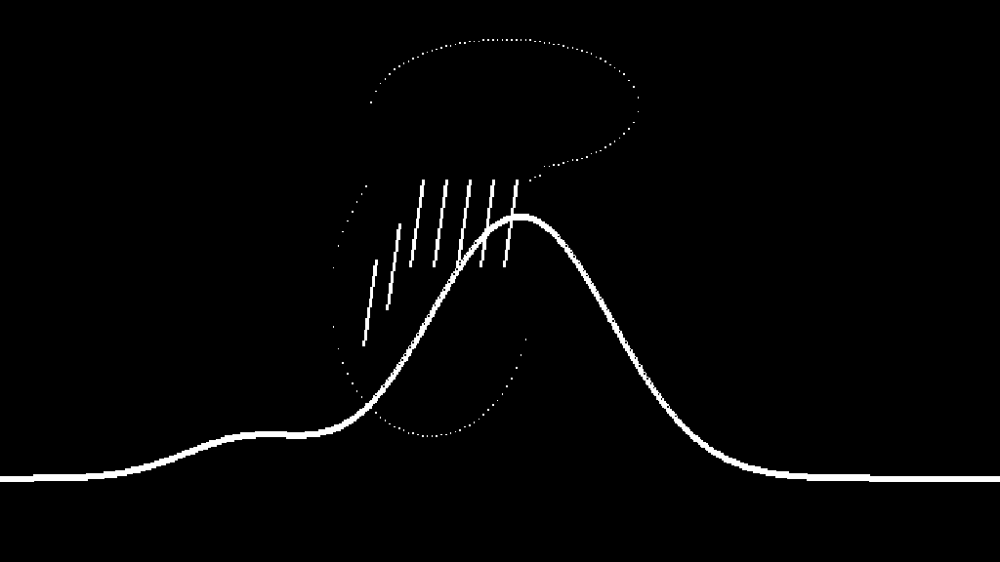
正向提示词
Wide side-view documentary landscape photograph of one mountain ridge beneath open sky, natural green rock and vegetation, deep atmospheric sky, volumetric cloud, realistic localized rain curtain, daylight, heavy rain only on the left windward slope while the right leeward slope remains dry, one peak, same silhouette, cloud and rain left of summit, dry right side, no text
负向提示词
second mountain, multiple peaks, rain on right slope, rain everywhere, snowstorm, waterfall, ocean, lake, buildings, roads, people, arrows, labels, diagram, numbers, letters, text, user interface, watermark, fantasy landscape, plastic, blur
两档控制强度 × 三个复现编号 = 六张候选。 “复现编号”只是随机噪声的固定起点；相同模型、参数和编号可重现同一张图， 它不是画面含义或质量分数。
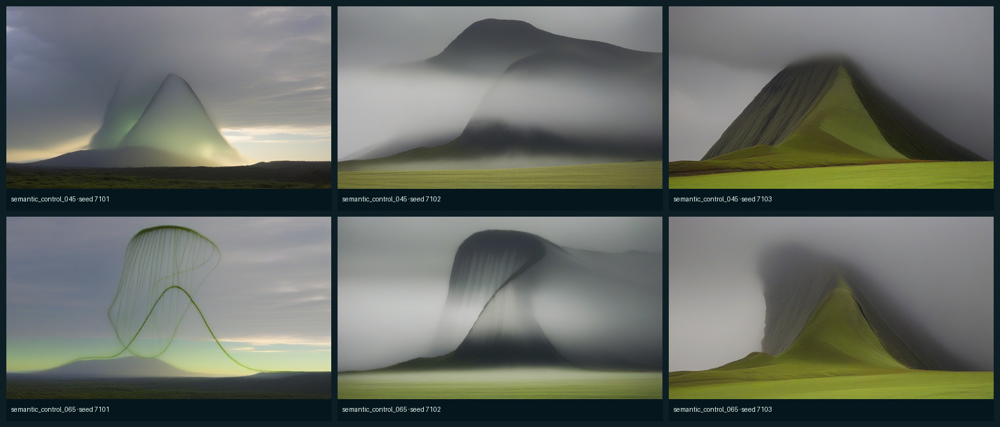
GEO-02 · 阶段结果 · 第二轮：只控制山体：控制图、完整提示词与六张候选
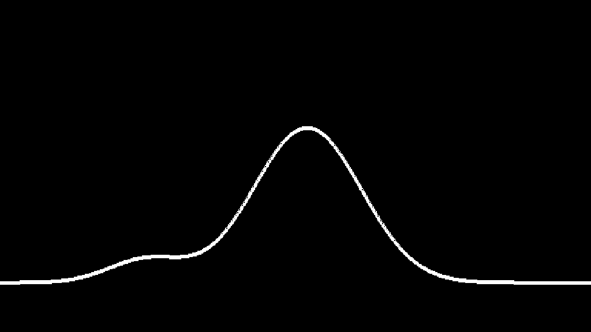
正向提示词
Wide side-view documentary landscape photograph of one mountain ridge beneath open sky, natural green rock and vegetation, deep atmospheric sky, volumetric cloud, realistic localized rain curtain, daylight, heavy rain only on the left windward slope while the right leeward slope remains dry, one peak, same silhouette, cloud and rain left of summit, dry right side, no text
负向提示词
second mountain, multiple peaks, rain on right slope, rain everywhere, snowstorm, waterfall, ocean, lake, buildings, roads, people, arrows, labels, diagram, numbers, letters, text, user interface, watermark, fantasy landscape, plastic, blur
两档控制强度 × 三个复现编号 = 六张候选。 “复现编号”只是随机噪声的固定起点；相同模型、参数和编号可重现同一张图， 它不是画面含义或质量分数。
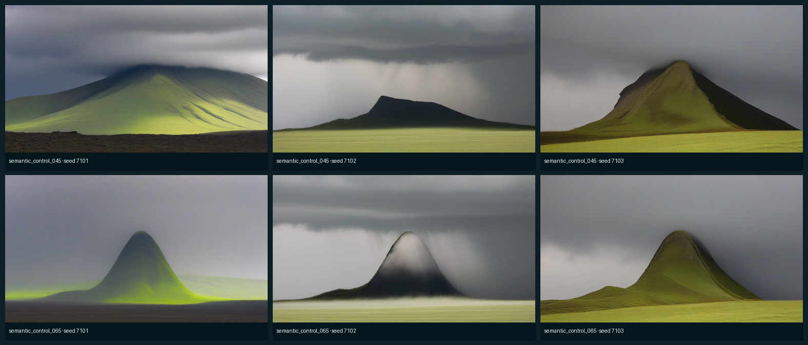
路线 B：冻结真实底图，再放回程序状态
路线 B 解决 A 的跨帧漂移：先选一张真实底图并永久冻结，再把程序的语义状态映射到
底图中的目标表面。通用抽象是 surface calibration → state field projection →
material-aware compositing：先标定“程序区域对应真实图哪里”，再投影状态场，
最后保留原图亮度、反射和纹理地合成。新帧不会重新抽噪声。
化学：pH 场 → 指示剂光学颜色
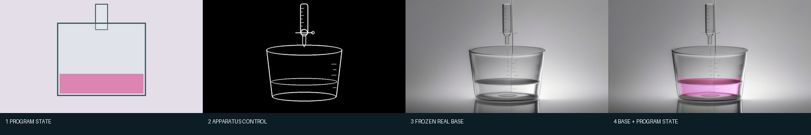
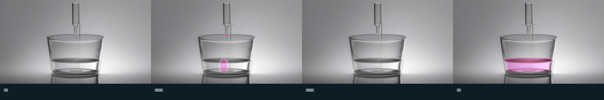
化学表面映射与光学合成的精确参数
程序液体区域先裁成自己的最小矩形，再双线性缩放到真实底图的 x=350–675。
底边固定 y=493；顶边由程序的 liquid_level_y 线性换算。真实可修改区域
是四点梯形 (350,y0)、(675,y0)、(652,493)、(370,493)，边缘做 5 px 羽化。
pH 经逻辑函数 1/(1+exp(-(pH-8.15)*2.5)) 变成指示剂强度。
三轮着色权重为 0.34、0.48、0.52；选中版本再用 0.38 的状态梯度边缘高光，
机制帧在滴定管尖端增加一枚羽化液滴。合成时按原底图亮度缩放粉色目标，因此玻璃反射
没有被一块纯色盖掉。器材外背景最大像素差实测为 0。
三轮变体全部展开：为什么选最后一轮
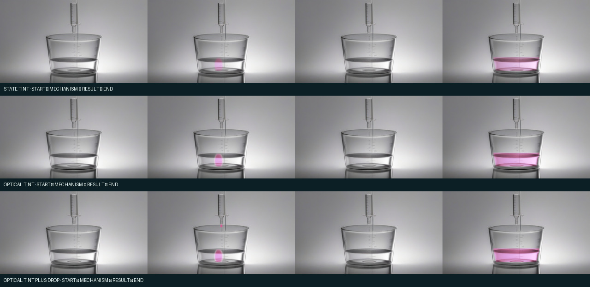
生物：只借材质统计，不借模型画出的细胞器
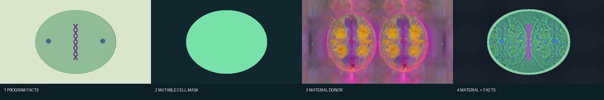
bio01_cell_region 语义层；只允许细胞内部换材质。
紫色染色体和蓝色纺锤极仍从程序图抽取，因此不会被供体图臆造。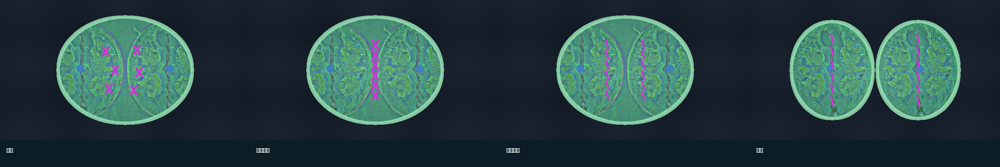
生物材质怎样避免把供体内容照搬进来
先把供体转为局部纹理统计，不保留它的细胞器位置。选中版本的细胞质基色为 RGB(66,136,111)，标准化纹理分别乘 (9,17,13)，再加入从细胞中心向边缘衰减、 峰值 24 的深度项。细胞膜强度为 0.85。紫色染色体和蓝色纺锤极从每一帧程序图重新 抽取后覆盖，所以供体只贡献“粗糙度”，不贡献教学事实。四帧渲染细胞面积与程序遮罩 逐像素一致。
三轮变体与失败样本
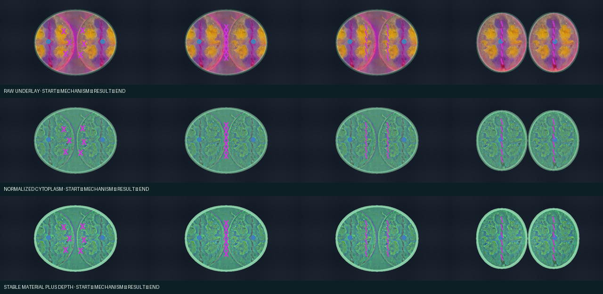
路线 C：对象坐标 / 物理场的确定性材质渲染
当知识点本身就是几何关系或连续场，像素合成仍不够强。路线 C 直接读取程序的结构数据： 几何案例读取对象多边形和身份；物理案例读取浮点高度场。模型只提供木纹或水色参考， 不决定面积、相位、波峰或对象数量。
数学：木纹固定在每个三角形自己的坐标里
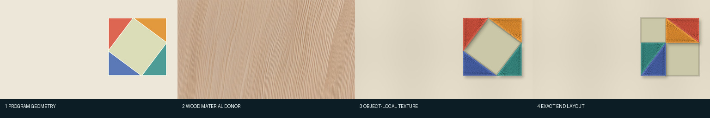
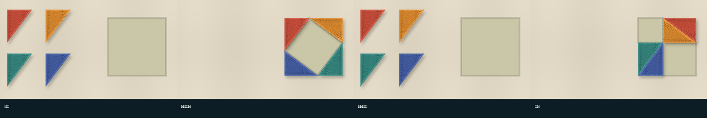
数学对象局部纹理怎样计算
每个三角形从 math02_piece_identity 读取三个顶点和稳定对象 ID。
以三个顶点建立 2×2 仿射逆矩阵，把每个屏幕像素变成该三角形的局部 u/v 坐标，
再用 u/v 去木材供体采样；因此移动、旋转时纹理跟随对象。9 px 内缩遮罩产生倒角，
阴影偏移 (6,8) px、模糊 5 px、强度 0.24。硬检查确认每帧始终四个对象，
材质覆盖面积始终等于程序多边形面积 22,204 px。
三轮数学材质
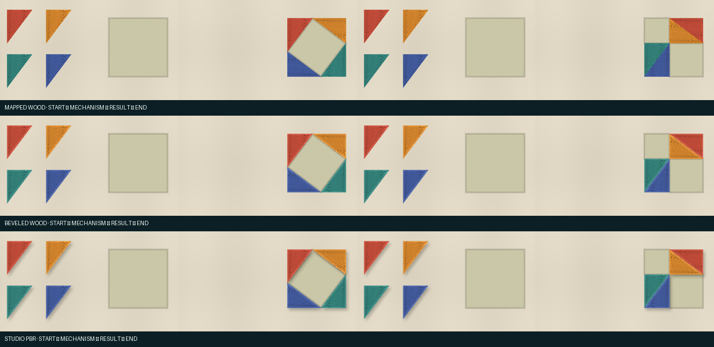
物理：波高求梯度，再计算水面光照
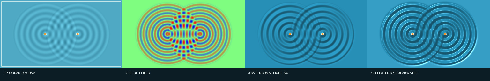
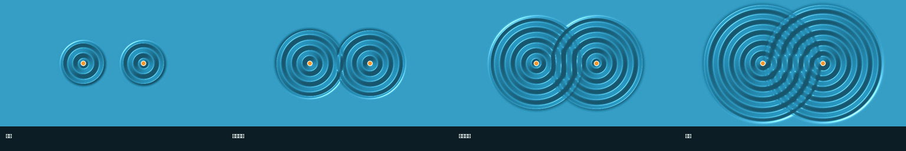
水面法线和镜面光怎样计算
从 phys01_surface_height 读取浮点高度 h，对 h 求 x/y 梯度，
组成法线 normalize(-16·dh/dx, -16·dh/dy, 1)。
光向量固定为 normalize(-0.38,-0.48,0.79)，蓝色基底是 RGB(38,139,177)，
漫反射系数为 0.62 + 0.52·max(N·L,0)。选中版本再用 Blinn 半程向量、
42 次幂和峰值 150 加镜面光。四帧中高度梯度与成图亮度的相关系数绝对值均大于 0.63，
说明看到的波纹确实受程序高度场驱动。
三轮水面与失败样本
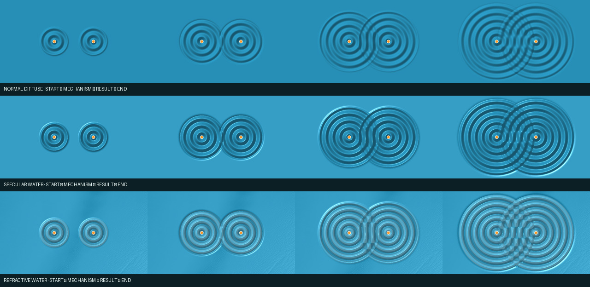
统一评分与自动路由规则
评分顺序是先硬事实、再真实感：如果对象数量、状态区域或数值场不对，即使好看也不能通过。 5 分表示可进入后续视频，3 分表示只能做供体，1 分表示不可用。
| 路线 | 实验 | 材质 | 事实/状态 | 跨帧 | 选择 |
|---|---|---|---|---|---|
| A | CHEM-01 direct four-frame generation | 4.6 | 2.2 | 2.0 | donor_only |
| A | GEO-02 semantic landscape control | 2.4 | 1.6 | 1.5 | rejected |
| A | GEO-02 terrain-only control | 3.8 | 2.1 | 2.0 | donor_only |
| B | CHEM-01 | 4.6 | 4.6 | 5.0 | optical_tint_plus_drop |
| B | BIO-01 | 4.1 | 4.7 | 4.7 | stable_material_plus_depth |
| C | MATH-02 | 4.2 | 5.0 | 5.0 | studio_pbr |
| C | PHYS-01 | 4.3 | 4.9 | 5.0 | specular_water |
- 有精确对象或物理场：走 C。纹理在对象坐标中，光照从数值场计算。
- 场景可冻结、变化是局部状态：走 B。真实底图不变，程序只改允许区域。
- 没有可信底图：先用 A 生成一次标准场景，人工或自动评分后冻结，再转 B。
- 禁止的默认路径：不再让 A 独立生成每个关键帧，也不再把 ±10 的微弱残差 当作“真实感已增强”。
失败记录：我们具体学到了什么
- 提示词超长：首版 83 token，在生成前拒绝；缩短至 65–75 token。 没有静默截断。由于失败发生在候选生成前，没有失败图片；当时的草稿文本也没有单独 落盘，这是本轮仍存在的日志缺口，报告不假装能够复原那段草稿。
- 控制图语义过载：山、云、雨同时画给 Canny 会互相误读；结构控制只保留 高置信硬边界，天气改由后续语义层处理。
- 直接贴真实图：生物供体会带入不存在的细胞器；只能提取材质统计。
- 过强物理特效：折射能增加“水感”，也会在高频干涉区形成棋盘伪影； 选用适度镜面，并保留被拒版本作为回归样本。
怎样完整复现
从仓库根目录 Live-Document 执行。第一条真正调用 SDXL，若文件和参数未变会
命中缓存；第二条重建 48 张确定性变体；第三条重新评分、生成本报告并检查链接。
/opt/venv/bin/python -m modules.video_model.stage2.phase7_semifree .venv/bin/python -m modules.video_model.stage2.phase7_hybrid_pbr .venv/bin/python -m modules.video_model.stage2.phase7 .venv/bin/python -m pytest modules/video_model/stage2/tests/test_phase7.py -q
本次已经把路线 B/C 的 48 张图完整重建一次，并逐文件比较重跑前后的 SHA-256：
48/48 未变化。该结果记录在 hybrid-pbr-manifest.json 的
determinism_replay 字段，并由总清单再次检查。
模型、提示词、控制强度、尺寸、步数和每个复现编号均在
phase7_semifree_matrix.json
与每个实验的 spec.json 中；选择和拒绝理由在
phase7-review.json；所有文件哈希与计数在
phase7-manifest.json。路线 B/C 的完整公式和参数见
phase7_hybrid_pbr.py。
本阶段没有宣称完成的部分
路线 B 当前的“表面标定”仍由案例适配器提供：化学要知道真实烧杯的液体表面， 生物要知道细胞区域。通用框架已经明确输入合同，但自动从任意生成图估计目标表面、 自动检查视频模型是否保持遮罩边界，仍是下一阶段工作。因此本阶段结论是 路线分工与可复现实现成立，不是“所有新概念已经零适配”。
报告状态：passed_with_documented_boundaries · 输出清单：phase7-manifest.json